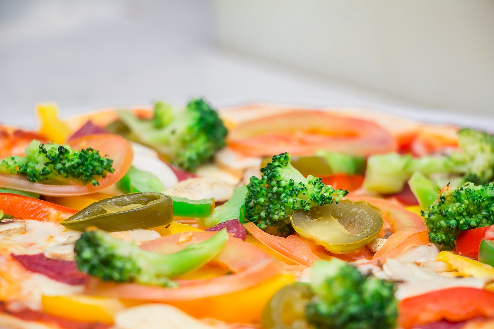

Pizza Recipe

Vegtable Pizza
Pizza is one of America's favorite foods. You can find a pizza shop on just about corner. You can buy any type of pizza you desire from plain cheese to some pretty
elaborate recipes. I personally like my pizza with some macaroni and cheese on top. One thing that is great about pizza is that it is super easy to make on your own.
Here is a recipe explaining how to make a delicious pizza at home.
Ingredients
- Pizza dough- this can be bought premade from most grocery stores, but feel free to find a recipe and try it on your own.
- Tomato sauce- preferrably with italian seasoning added
- Mozzarella cheese
- Vegtables- These are the ones I like
- Broccoli
- Mushrooms
- Jalapenos
- Onion
Steps
- First you will need to take the dough and roll it out flat. You can use premade crust to save yourself some time here. Also, I like to use a pita for a personal pizza
- Once the dough is flattened you will put the pizza sauce directly on top. Be sure to spread evenly.
- Now spread the cheese all over the sauce to cover completely. Be sure to leave room on the outside so you can hold your slice of pizza.
- Finally you can put on your toppings. Place them equally throughout, or only place on portion so that you can share with a friend who might not like Jalapenos.
Now you can enjoy your hot and delicious pizza without waiting for your delivery person.